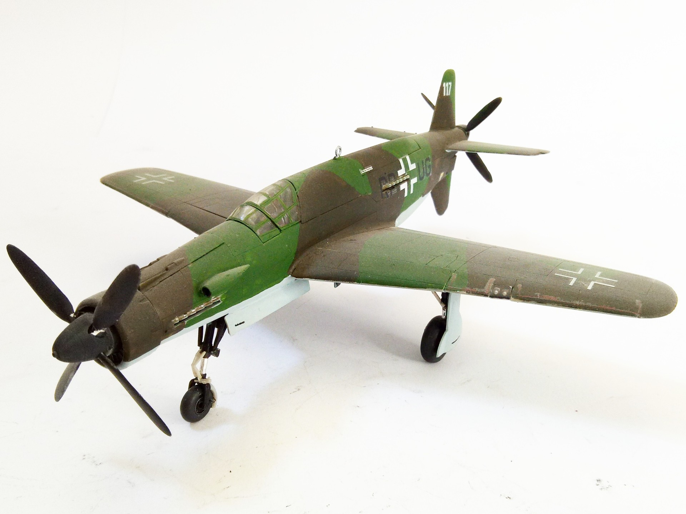
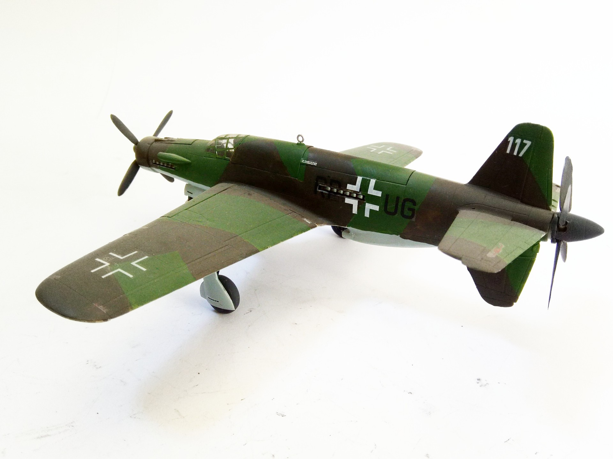

Aerei · scale model archive
Dornier Do 335 Pfeil
Dornier Do 335 Pfeil — Kit: Monogram, Scale: 1/48. 4-blade propeller added to check how it would look like #1/48 Monogram

Photo gallery

English description
4-blade propeller added to check how it would look like
#1/48 Monogram
Descrizione italiana
4-blade elica added una check how lo would look like.
#1/48 Monogram.